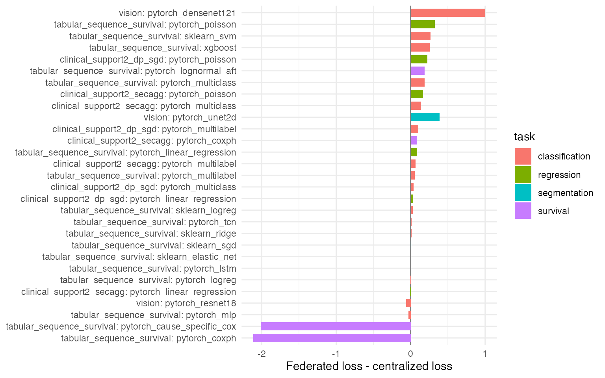

dsFlower Validation Evidence Overview
validation-overview.RmdThis macro-vignette summarizes the committed dsFlower validation evidence. The current presentation layer is the public biomedical evidence: clinical benchmarks, SUPPORT2 method-family tasks, LUNG1 imaging handoffs and the PathMNIST direct-image benchmark. The synthetic method and vision suites provide catalogue coverage: they confirm that every authorised template can be staged, executed, aggregated, persisted and cleaned up across three Opal/Rock servers. They complement the biomedical reports by checking the full template surface under deterministic conditions.
The clinical and method-family benchmarks use
clinical_default, clinical_update_noise or
high_sensitivity_dp, so Secure Aggregation, profile-level
disclosure guards and, where applicable, DP-SGD epsilon curves or
bounded histogram-noise curves are active. The SUPPORT2 DP-SGD evidence
is interpreted over the four templates whose losses decompose by sample.
CoxPH is still validated in the Secure Aggregation run; because its
risk-set partial likelihood is not a per-example loss,
high_sensitivity_dp is not the matching privacy profile for
that route.
thesis_evidence <- data.frame(
layer = c(
'clinical trusted benchmark',
'clinical SecAgg benchmark',
'clinical DP-SGD benchmark',
'XGBoost histogram update-noise',
'SUPPORT2 SecAgg families',
'SUPPORT2 DP-SGD families',
'LUNG1 radiomics handoff',
'LUNG1 direct-image handoff',
'PathMNIST direct-image benchmark'
),
data = c(
'Breast Cancer, Heart Disease, Pima, CDC Diabetes',
'Breast Cancer, Pima, CDC Diabetes',
'CDC Diabetes',
'CDC Diabetes',
'SUPPORT2',
'SUPPORT2',
paste0(lung1_rad$dimensions[['dimensions of rad in combined studies']][[1]], ' LUNG1-derived rows'),
paste0(sum(as.integer(unlist(lung1_img$metadata_n))), ' LUNG1 NIfTI assets'),
paste0(pathmnist$n_total, ' PathMNIST images')
),
profile = c(
clinical_trusted$privacy_profile,
clinical_secagg$privacy_profile,
clinical_dp$privacy_profile,
xgb_noise$privacy_profile,
if (!is.null(family_validation)) family_validation$privacy_profile else NA,
if (!is.null(family_dp_validation)) family_dp_validation$privacy_profile else NA,
lung1_rad$privacy,
lung1_img$privacy,
'trusted_internal + consortium_internal'
),
runs_or_routes = c(
count_results(clinical_trusted),
count_results(clinical_secagg),
count_results(clinical_dp),
count_results(xgb_noise),
if (!is.null(family_results)) nrow(family_results) else NA,
if (!is.null(family_dp_results)) nrow(family_dp_results) else NA,
length(lung1_rad$history),
length(lung1_img$history),
length(pathmnist$profile_results)
),
failures = c(
count_failures(clinical_trusted),
count_failures(clinical_secagg),
count_failures(clinical_dp),
count_failures(xgb_noise),
if (!is.null(family_results)) sum(family_results$federated_n_failures) else NA,
if (!is.null(family_dp_results)) sum(family_dp_results$federated_n_failures) else NA,
sum(vapply(lung1_rad$history, `[[`, numeric(1), 'n_failures')),
lung1_img$local_vs_federated$federated$n_failures,
pathmnist$trusted_internal_comparison$federated_failures +
pathmnist$consortium_internal_secagg$federated_failures
),
stringsAsFactors = FALSE
)
knitr::kable(thesis_evidence, row.names = FALSE)| layer | data | profile | runs_or_routes | failures |
|---|---|---|---|---|
| clinical trusted benchmark | Breast Cancer, Heart Disease, Pima, CDC Diabetes | trusted_internal | 6 | 0 |
| clinical SecAgg benchmark | Breast Cancer, Pima, CDC Diabetes | clinical_default | 8 | 0 |
| clinical DP-SGD benchmark | CDC Diabetes | high_sensitivity_dp | 2 | 0 |
| XGBoost histogram update-noise | CDC Diabetes | clinical_update_noise | 1 | 0 |
| SUPPORT2 SecAgg families | SUPPORT2 | clinical_default | 5 | 0 |
| SUPPORT2 DP-SGD families | SUPPORT2 | high_sensitivity_dp | 4 | 0 |
| LUNG1 radiomics handoff | 422 LUNG1-derived rows | trusted_internal | 2 | 0 |
| LUNG1 direct-image handoff | 9 LUNG1 NIfTI assets | sandbox_open | 1 | 0 |
| PathMNIST direct-image benchmark | 1500 PathMNIST images | trusted_internal + consortium_internal | 2 | 0 |
summary_table <- data.frame(
suite = c('tabular_sequence_survival', 'vision', 'clinical_support2_secagg',
'clinical_support2_dp_sgd'),
generated_at = c(
method_validation$generated_at,
if (!is.null(vision_validation)) vision_validation$generated_at else NA,
if (!is.null(family_validation)) family_validation$generated_at else NA,
if (!is.null(family_dp_validation)) family_dp_validation$generated_at else NA
),
privacy_profile = c(
method_validation$privacy_profile,
if (!is.null(vision_validation)) vision_validation$privacy_profile else NA,
if (!is.null(family_validation)) family_validation$privacy_profile else NA,
if (!is.null(family_dp_validation)) family_dp_validation$privacy_profile else NA
),
n_sites = c(
method_validation$n_sites,
if (!is.null(vision_validation)) vision_validation$n_sites else NA,
if (!is.null(family_validation)) family_validation$n_sites else NA,
if (!is.null(family_dp_validation)) family_dp_validation$n_sites else NA
),
n_total = c(
method_validation$n_total,
if (!is.null(vision_validation)) vision_validation$n_total else NA,
if (!is.null(family_validation)) family_validation$n_total else NA,
if (!is.null(family_dp_validation)) family_dp_validation$n_total else NA
),
secagg_supported = c(
method_validation$secagg_supported,
NA,
if (!is.null(family_validation)) family_validation$secagg_supported else NA,
if (!is.null(family_dp_validation)) family_dp_validation$secagg_supported else NA
),
stringsAsFactors = FALSE
)
knitr::kable(summary_table)| suite | generated_at | privacy_profile | n_sites | n_total | secagg_supported |
|---|---|---|---|---|---|
| tabular_sequence_survival | 2026-05-11T18:45:11+0200 | sandbox_open | 3 | 270 | FALSE |
| vision | 2026-05-11T14:01:13.113Z | sandbox_open | 3 | 12 | NA |
| clinical_support2_secagg | 2026-05-27T03:47:51+0200 | clinical_default | 3 | 3000 | TRUE |
| clinical_support2_dp_sgd | 2026-05-27T06:34:21+0200 | high_sensitivity_dp | 3 | 3000 | TRUE |
knitr::kable(results)| suite | method | task | centralized_metric | centralized_loss | federated_status | federated_loss | delta_loss | acceptable_loss | validation_status |
|---|---|---|---|---|---|---|---|---|---|
| tabular_sequence_survival | sklearn_logreg | classification | log_loss | 0.2051486 | ok | 0.2334975 | 0.0283488 | TRUE | pass |
| tabular_sequence_survival | sklearn_ridge | classification | ridge_decision_mse | 0.4977802 | ok | 0.5091765 | 0.0113963 | TRUE | pass |
| tabular_sequence_survival | sklearn_sgd | classification | log_loss | 0.1955451 | ok | 0.2010754 | 0.0055303 | TRUE | pass |
| tabular_sequence_survival | sklearn_svm | classification | hinge_loss | 0.8285259 | ok | 1.0934755 | 0.2649496 | TRUE | pass |
| tabular_sequence_survival | sklearn_elastic_net | classification | log_loss | 0.1964865 | ok | 0.1999917 | 0.0035052 | TRUE | pass |
| tabular_sequence_survival | pytorch_logreg | classification | binary_cross_entropy | 0.6188036 | ok | 0.6153246 | -0.0034790 | TRUE | pass |
| tabular_sequence_survival | pytorch_mlp | classification | binary_cross_entropy | 0.7006344 | ok | 0.6729940 | -0.0276404 | TRUE | pass |
| tabular_sequence_survival | pytorch_linear_regression | regression | mse | 3.2117758 | ok | 3.2979894 | 0.0862137 | TRUE | pass |
| tabular_sequence_survival | pytorch_multiclass | classification | cross_entropy | 0.9693452 | ok | 1.1560042 | 0.1866590 | TRUE | pass |
| tabular_sequence_survival | pytorch_multilabel | classification | multilabel_bce | 0.5932636 | ok | 0.6503268 | 0.0570632 | TRUE | pass |
| tabular_sequence_survival | pytorch_poisson | regression | poisson_nll | 0.8903766 | ok | 1.2140644 | 0.3236878 | TRUE | pass |
| tabular_sequence_survival | pytorch_coxph | survival | cox_partial_likelihood | 4.8610749 | ok | 2.7456091 | -2.1154658 | TRUE | pass |
| tabular_sequence_survival | pytorch_lognormal_aft | survival | lognormal_aft_nll | 3.4966099 | ok | 3.6833530 | 0.1867431 | TRUE | pass |
| tabular_sequence_survival | pytorch_cause_specific_cox | survival | cause_specific_cox_loss | 4.6180305 | ok | 2.6027638 | -2.0152668 | TRUE | pass |
| tabular_sequence_survival | pytorch_lstm | classification | binary_cross_entropy | 0.6957106 | ok | 0.6962039 | 0.0004933 | TRUE | pass |
| tabular_sequence_survival | pytorch_tcn | classification | binary_cross_entropy | 0.6658388 | ok | 0.6795301 | 0.0136913 | TRUE | pass |
| tabular_sequence_survival | xgboost | classification | log_loss | 0.4348304 | ok | 0.6931472 | 0.2583168 | TRUE | pass |
| vision | pytorch_resnet18 | classification | cross_entropy | 0.5605000 | ok | 0.5399000 | -0.0206000 | TRUE | pass |
| vision | pytorch_densenet121 | classification | cross_entropy | 0.6033000 | ok | 0.9373000 | 0.3339000 | TRUE | pass |
| vision | pytorch_unet2d | segmentation | dice_bce_loss | 1.3099000 | ok | 1.4397000 | 0.1298000 | TRUE | pass |
| vision | pytorch_resnet18 | classification | cross_entropy | 0.5605000 | ok | 0.5399000 | -0.0206000 | TRUE | pass |
| vision | pytorch_densenet121 | classification | cross_entropy | 0.6033000 | ok | 0.9373000 | 0.3339000 | TRUE | pass |
| vision | pytorch_unet2d | segmentation | dice_bce_loss | 1.3099000 | ok | 1.4397000 | 0.1298000 | TRUE | pass |
| vision | pytorch_resnet18 | classification | cross_entropy | 0.5605000 | ok | 0.5399000 | -0.0206000 | TRUE | pass |
| vision | pytorch_densenet121 | classification | cross_entropy | 0.6033000 | ok | 0.9373000 | 0.3339000 | TRUE | pass |
| vision | pytorch_unet2d | segmentation | dice_bce_loss | 1.3099000 | ok | 1.4397000 | 0.1298000 | TRUE | pass |
| clinical_support2_secagg | pytorch_linear_regression | regression | mse | 0.5741231 | ok | 0.5671876 | -0.0069355 | TRUE | pass |
| clinical_support2_secagg | pytorch_poisson | regression | poisson_nll | 0.3047131 | ok | 0.4711799 | 0.1664668 | TRUE | pass |
| clinical_support2_secagg | pytorch_multiclass | classification | cross_entropy | 0.0517221 | ok | 0.1897127 | 0.1379906 | TRUE | pass |
| clinical_support2_secagg | pytorch_multilabel | classification | multilabel_bce | 0.3928204 | ok | 0.4596463 | 0.0668259 | TRUE | pass |
| clinical_support2_secagg | pytorch_coxph | survival | cox_partial_likelihood | 6.2618389 | ok | 6.3498344 | 0.0879955 | TRUE | pass |
| clinical_support2_dp_sgd | pytorch_linear_regression | regression | mse | 0.5741231 | ok | 0.6077577 | 0.0336346 | TRUE | pass |
| clinical_support2_dp_sgd | pytorch_poisson | regression | poisson_nll | 0.3047131 | ok | 0.5273113 | 0.2225982 | TRUE | pass |
| clinical_support2_dp_sgd | pytorch_multiclass | classification | cross_entropy | 0.0205827 | ok | 0.0597022 | 0.0391194 | TRUE | pass |
| clinical_support2_dp_sgd | pytorch_multilabel | classification | multilabel_bce | 0.3928204 | ok | 0.4936543 | 0.1008338 | TRUE | pass |
plot_df <- results[is.finite(results$delta_loss), , drop = FALSE]
if (nrow(plot_df) > 0 && requireNamespace('ggplot2', quietly = TRUE)) {
plot_df$label <- paste(plot_df$suite, plot_df$method, sep = ': ')
ggplot2::ggplot(plot_df, ggplot2::aes(x = stats::reorder(label, delta_loss), y = delta_loss, fill = task)) +
ggplot2::geom_hline(yintercept = 0, linewidth = 0.3, color = 'grey40') +
ggplot2::geom_col(width = 0.7) +
ggplot2::coord_flip() +
ggplot2::labs(x = NULL, y = 'Federated loss - centralized loss') +
ggplot2::theme_minimal(base_size = 11)
}
Per-method vignettes:
Vision method vignettes:
The vision-specific overview remains available at Vision Method Validation Overview.
The full suite is produced by repeating the inline Opal/DataSHIELD/Flower workflow shown in each per-method vignette for every method listed above. The persisted JSON artifacts are the audit trail consumed by this pkgdown site.